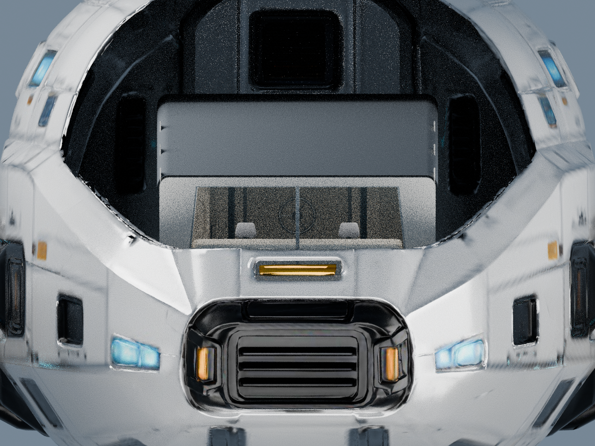
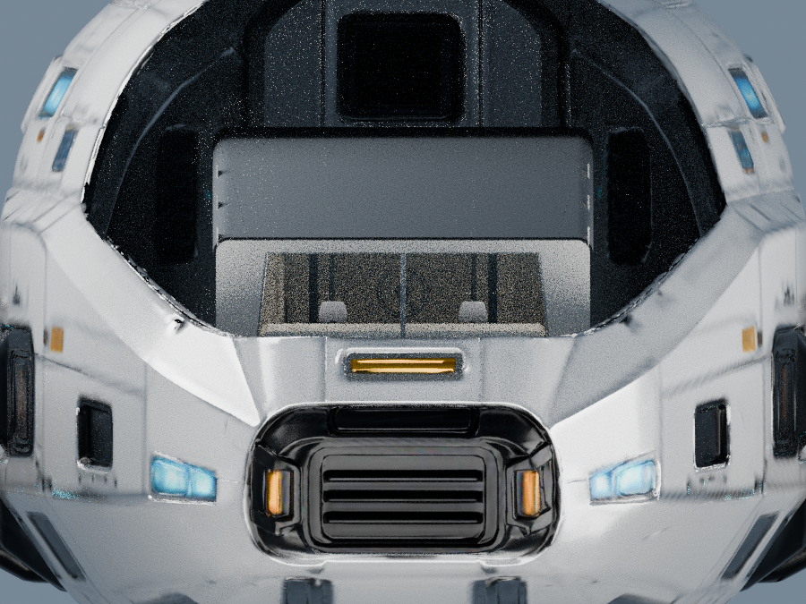
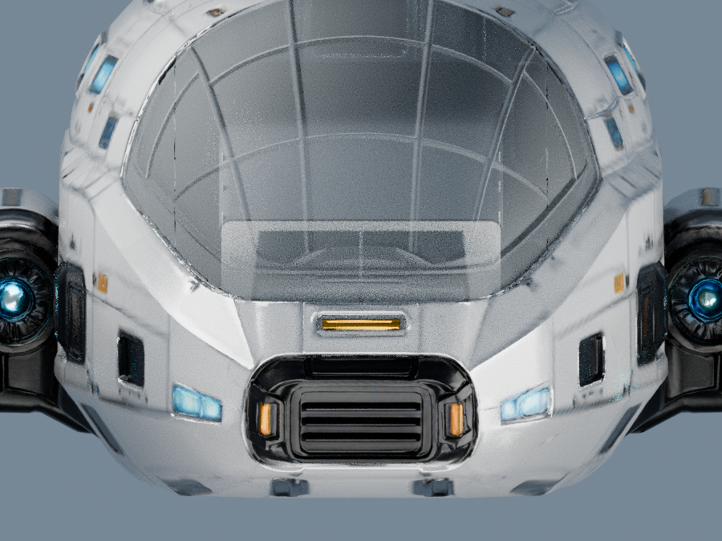
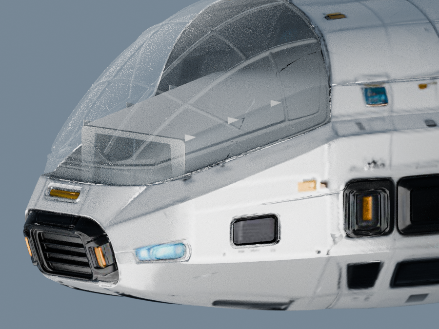

以看清舱内为首要目标：低遮盖、低反射，去掉上一版的白雾和明显折射遮挡。玻璃仍保留在模型中，船壳、窗框及内舱形状保留。


右图是真实 GLB 合显，保留船壳、外窗和仓库现有完整内舱；没有移除顶棚、侧墙或设备来假装视线通畅。两图使用相同机位和舱内照明，左图仅为关闭外窗玻璃的诊断参考。
其他方向仍可能被原内舱的顶棚、墙面或设备挡住，玻璃透明不能使这些实体也透明。这版只调整窗面材质，等待你判断。
对照灯光属于审阅场景；GLB 内舱、几何与原件保持。保留的 r3 对照 · 原黑块修复对照
静态图可直接打开；3D 对照需从项目开发服务打开并使用项目已有 Three.js 依赖。
保留初查画面：偏暗和内部结构遮挡仍存在，不将玻璃透光等同于所有方向都能看见所有设备。


拖拽旋转、右键平移、滚轮缩放；WASD / 方向键移动，Q / E 升降。